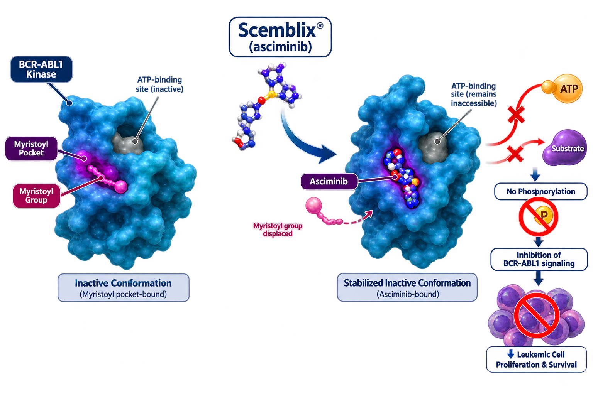

Novartis
Scemblix (asciminib) is a first-in-class STAMP inhibitor indicated for the treatment of Philadelphia chromosome-positive chronic myeloid leukemia (CML). It specifically targets the ABL myristoyl pocket, providing a novel mechanism distinct from traditional tyrosine kinase inhibitors.
Scemblix
Asciminib
STAMP Inhibitor
Oral
Novartis
Asciminib is the first BCR::ABL1 inhibitor that Specifically Targets the ABL Myristoyl Pocket (STAMP). Unlike conventional TKIs that bind the ATP-binding site, asciminib binds to the myristoyl pocket of ABL1, locking the kinase in an inactive conformation and inhibiting leukemic cell proliferation.

| Trial | Setting | Outcome |
|---|---|---|
| ASCEMBL | Chronic Phase CML | Superior MMR vs Bosutinib |
| ASC4FIRST | First-Line CML | Improved Molecular Response |
| T315I Cohort | Mutated CML | Durable Responses |
Recommended dose: 80 mg orally once daily or 40 mg orally twice daily.
| Recommended Dose | 80 mg Once Daily or 40 mg Twice Daily |
|---|---|
| Route | Oral |
| Schedule | Continuous Treatment |
| Administration | Take on an Empty Stomach |